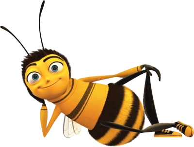

Name:
Weight: pollen points
Happiness: buzz levels
Barry is ready to buzz around.
Chrome DevTools Examples
Use these buttons to create console messages, browser errors, breakpoints, and debugging examples for the assignment screenshots.
Open Chrome DevTools using F12 or
Right Click → Inspect, then check the
Console and Sources tabs.